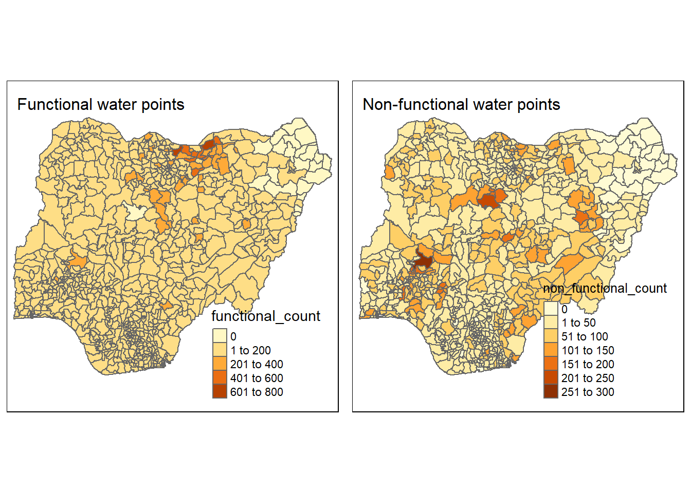

pacman::p_load(sf, tmap, tidyverse)Take-home Exercise 1: Geospatial Analytics for Social Good
1 Overview
In this take-home exercise,
2 Objectives
The objectives of this take-home exercise are as outlined in the following:
Using appropriate sf method, import the shapefile into R and save it in a simple feature data frame format. Any one of the three Projected Coordinate Systems of Nigeria, EPSG: 26391, 26392, and 26303 can be used.
Using appropriate tidyr and dplyr methods, derive the proportion of functional and non-functional water point at LGA level.
Combining the geospatial and aspatial data frame into simple feature data frame.
Performing outliers/clusters analysis by using appropriate local measures of spatial association methods.
Performing hotspot areas analysis by using appropriate local measures of spatial association methods.
3 The Data
3.1 Aspatial Data
Data was downloaded from WPdx Global Data Repositories on 24 November 2022 in a csv format. The WPdx+ data set was filtered for “nigeria” in the column clean_country_name before downloading. There is a total of 95,08 unique water point records.
3.2 Geospatial Data
Nigeria Level-2 Administrative Boundary (also known as Local Government Area) polygon features GIS data was downloaded from geoBoundaries.
4 Getting the Data Into R Environment
4.1 Getting Started - Setting up the environment
4.2 Import shapefile into R environment
The following code chunk uses st_read() from sf package to import the geoboundaries shapefile into R as a polygon feature dataframe.
nga <- st_read(dsn = "data/geospatial",
layer = "geoBoundaries-NGA-ADM2")Reading layer `geoBoundaries-NGA-ADM2' from data source
`C:\lohsiying\ISSS624\take_home_ex\ex1\data\geospatial' using driver `ESRI Shapefile'
Simple feature collection with 774 features and 5 fields
Geometry type: MULTIPOLYGON
Dimension: XY
Bounding box: xmin: 2.668534 ymin: 4.273007 xmax: 14.67882 ymax: 13.89442
Geodetic CRS: WGS 84The above printout shows that nga is in wgs84 coordinates system. As geographic coordinate system is not appropriate for analysis that uses distance and/or area measurements, we will transform the projection using the code chunk below.
nga26391 <- st_transform(nga,
crs = 26391)
nga26391Simple feature collection with 774 features and 5 fields
Geometry type: MULTIPOLYGON
Dimension: XY
Bounding box: xmin: 28879.72 ymin: 30292.37 xmax: 1343798 ymax: 1094244
Projected CRS: Minna / Nigeria West Belt
First 10 features:
shapeName Level shapeID shapeGroup shapeType
1 Aba North ADM2 NGA-ADM2-72505758B79815894 NGA ADM2
2 Aba South ADM2 NGA-ADM2-72505758B67905963 NGA ADM2
3 Abadam ADM2 NGA-ADM2-72505758B57073987 NGA ADM2
4 Abaji ADM2 NGA-ADM2-72505758B61968000 NGA ADM2
5 Abak ADM2 NGA-ADM2-72505758B39432389 NGA ADM2
6 Abakaliki ADM2 NGA-ADM2-72505758B36739173 NGA ADM2
7 Abeokuta North ADM2 NGA-ADM2-72505758B86358915 NGA ADM2
8 Abeokuta South ADM2 NGA-ADM2-72505758B56925175 NGA ADM2
9 Abi ADM2 NGA-ADM2-72505758B1616690 NGA ADM2
10 Aboh-Mbaise ADM2 NGA-ADM2-72505758B78555816 NGA ADM2
geometry
1 MULTIPOLYGON (((552560.3 12...
2 MULTIPOLYGON (((545153.6 12...
3 MULTIPOLYGON (((1245549 106...
4 MULTIPOLYGON (((510602.3 57...
5 MULTIPOLYGON (((598086 1218...
6 MULTIPOLYGON (((663801.7 25...
7 MULTIPOLYGON (((81132.88 37...
8 MULTIPOLYGON (((98464.54 34...
9 MULTIPOLYGON (((635478 2187...
10 MULTIPOLYGON (((543608.8 15...The above printout shows that in the geometry column, the values are greater than 0-360 range of decimal degree that are commonly used by most geographic coordinate system. This indicates that we have successfully transformed to a projected coordinate system.
4.3 Import csv file into R environment
In this subsection, we will import aspatial data using the following code chunk.
wpd <- read_csv("data/aspatial/wpdx_nigeria.csv")Warning: One or more parsing issues, call `problems()` on your data frame for details,
e.g.:
dat <- vroom(...)
problems(dat)Rows: 95008 Columns: 70
── Column specification ────────────────────────────────────────────────────────
Delimiter: ","
chr (38): #source, #report_date, #status_id, #water_source_clean, #water_sou...
dbl (20): row_id, #lat_deg, #lon_deg, #install_year, #distance_to_primary_ro...
lgl (12): #clean_adm3, #clean_adm4, #installer, #rehab_year, #rehabilitator,...
ℹ Use `spec()` to retrieve the full column specification for this data.
ℹ Specify the column types or set `show_col_types = FALSE` to quiet this message.The two fields #lat_deg and #long_deg are in decimal degree format. As a best guess, we will assume that the data is in wgs84 Geographic Coordinate System. We will then convert wpd data frame in to a simple feature data frame by using the following code chunk.
wpd_sf <- st_as_sf(wpd,
coords = c("#lon_deg", "#lat_deg"),
crs=4326) %>%
st_transform(crs = 26391)
wpd_sfSimple feature collection with 95008 features and 68 fields
Geometry type: POINT
Dimension: XY
Bounding box: xmin: 32536.82 ymin: 33461.24 xmax: 1292096 ymax: 1091052
Projected CRS: Minna / Nigeria West Belt
# A tibble: 95,008 × 69
row_id `#source` #repo…¹ #stat…² #wate…³ #wate…⁴ #wate…⁵ #wate…⁶ #faci…⁷
* <dbl> <chr> <chr> <chr> <chr> <chr> <chr> <chr> <chr>
1 429068 GRID3 08/29/… Unknown <NA> <NA> Tapsta… Tapsta… Improv…
2 222071 Federal Minis… 08/16/… Yes Boreho… Well Mechan… Mechan… Improv…
3 160612 WaterAid 12/04/… Yes Boreho… Well Hand P… Hand P… Improv…
4 160669 WaterAid 12/04/… Yes Boreho… Well <NA> <NA> Improv…
5 160642 WaterAid 12/04/… Yes Boreho… Well Hand P… Hand P… Improv…
6 160628 WaterAid 12/04/… Yes Boreho… Well Hand P… Hand P… Improv…
7 160632 WaterAid 12/04/… Yes Boreho… Well Hand P… Hand P… Improv…
8 642747 Living Water … 10/03/… Yes Boreho… Well Mechan… Mechan… Improv…
9 642456 Living Water … 10/03/… Yes Boreho… Well Hand P… Hand P… Improv…
10 641347 Living Water … 03/28/… Yes Boreho… Well Hand P… Hand P… Improv…
# … with 94,998 more rows, 60 more variables: `#clean_country_name` <chr>,
# `#clean_adm1` <chr>, `#clean_adm2` <chr>, `#clean_adm3` <lgl>,
# `#clean_adm4` <lgl>, `#install_year` <dbl>, `#installer` <lgl>,
# `#rehab_year` <lgl>, `#rehabilitator` <lgl>, `#management_clean` <chr>,
# `#status_clean` <chr>, `#pay` <chr>, `#fecal_coliform_presence` <lgl>,
# `#fecal_coliform_value` <lgl>, `#subjective_quality` <chr>,
# `#activity_id` <chr>, `#scheme_id` <lgl>, `#wpdx_id` <chr>, …From the printout above, we can see that we have successfully transformed the coordinate in wpd_sf to be the same as nga26391 with Projected CRS: Minna / Nigeria West Belt.
4.3.1 Data wrangling for wpd_sf
We will first rename the column for #status_clean to status_clean for easier handling.
wpd_sf <- rename(wpd_sf, 'status_clean' = '#status_clean')We then check the classes present in this column. We are interested in differentiating records with functional and records with non-functional water points.
unique(wpd_sf$'status_clean')[1] NA "Functional"
[3] "Abandoned/Decommissioned" "Non-Functional"
[5] "Functional but not in use" "Functional but needs repair"
[7] "Abandoned" "Non functional due to dry season"
[9] "Non-Functional due to dry season"It can be observed that there are different classification within function and within non-functional water points. We will create 2 separate dataframes each containing either type of functional water points.
wpd_functional <- filter(wpd_sf,
status_clean %in% c("Functional but not in use",
"Functional",
"Functional but needs repair"))wpd_non_functional <- filter(wpd_sf,
status_clean %in% c("Abandoned/Decommissioned",
"Abandoned",
"Non-Functional due to dry season",
"Non-Functional",
"Non functional due to dry season"))5 Geoprocessing with sf package
5.1 Performing point-in-polygon count
Next, we want to find the number of functional water points in each LDA as well as the number of non-functional water points in each LDA. This is performed in the following code chunk. First, it identifies the functional water points in each LDA by using st_intersects(). Next, length() is used to calculate the number of functional water points that fall inside each LDA.
nga26391$`functional_count` <- lengths(st_intersects(nga26391, wpd_functional))Likewise, we will do this to find the number of non-functional water points in each LDA.
nga26391$`non_functional_count` <- lengths(st_intersects(nga26391,
wpd_non_functional))5.2 Visualising the number of waterpoints in each LDA
First, we will visualise the spatial distribution of function and non-functional water points using a choropleth. This is performed using the code chunk below.
functionalmap <- tm_shape(nga26391) +
tm_polygons("functional_count") +
tm_layout(title = "Functional water points",
title.size = 1)
nonfunctionalmap <- tm_shape(nga26391) +
tm_polygons("non_functional_count") +
tm_layout(title = "Non-functional water points",
title.size = 1)
tmap_arrange(functionalmap, nonfunctionalmap, asp=1, ncol=2)